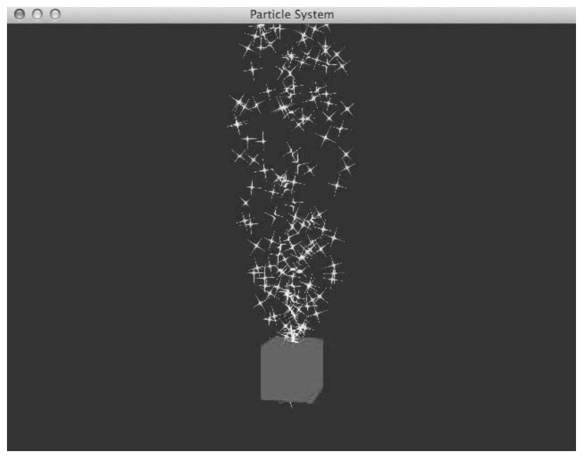
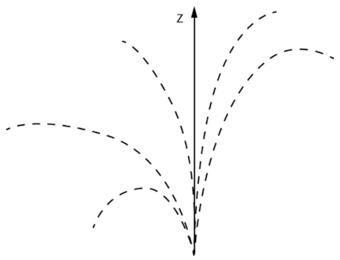
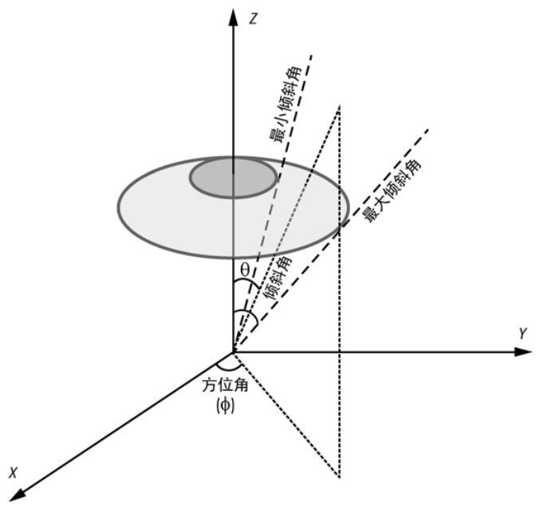
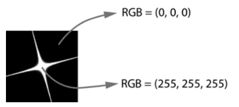
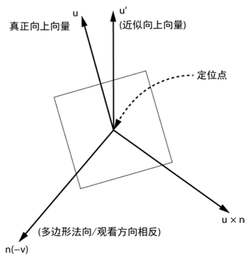

第 10 章 粒子系统#
本章解决：烟雾、火焰、头发这类没有明确几何形状的物体怎么在计算机里画出来——答案是粒子系统（Particle System）：一大群带位置和颜色的小图元，按数学规则随时间运动、变色，再配合透明度和公告板等渲染技术，合成逼真的动画。本章做出一个火花喷泉：运动方程交给 GPU 着色器计算，alpha 混合让黑色背景消失，公告板让二维贴图永远面向观众，还能按键盘逐个开关这些效果做对比。 承上启下：第 9 章搭好的整套 OpenGL 脚手架（VBO/VAO、着色器程序、GLFW 窗口与主循环）在这里原样沿用，新学三件核心武器：把物理计算放进顶点着色器（GPU 每帧解析算出全部粒子轨迹）、公告板矩阵（用二维图片冒充三维物体）、加法混合（黑色区域"消失"术）。下一章体渲染继续在 GPU 着色器上做文章，把整块三维数据变成图像。
📓 章代码：nb/ch10.ipynb（分节代码；ch01–08 含固定种子实跑输出，ch09–14 为完整实现待硬件环境）
在计算机图形世界中，粒子系统是用许多小图元（如点、线、三角形和多边形）来表示的物体，如烟雾、火焰，甚至头发——它们没有明确的几何形状，因此很难用标准技术来建模。
例如，如何在计算机上制造一次爆炸效果？设想爆炸从空间中的一个点开始，然后向外扩张，作为一个快速扩大的、复杂的三维实体，随时间而改变形状和颜色——不夸张地说，尝试建立数学模型就令人望而生畏。但现在换一个思路：爆炸包含一群细小的粒子，每个粒子有关联的位置和颜色。爆炸开始时，粒子在空间中的一个点上聚成一团；随着时间的推移，它们根据一定的数学规则向外移动，并改变颜色；定期绘制所有粒子，就生成了爆炸的动画。利用好的数学模型、大量粒子，以及透明度和公告板（billboarding）这样的渲染技术，可以创建逼真的效果。
本项目会制定粒子运动的数学模型，将它表示为时间的函数，并利用图形处理单元（GPU）的着色器进行计算。然后设计一种渲染方案，利用公告板技术让二维图像一直面向观众，使二维图像看起来像是三维的，用一种令人信服的方式绘制粒子。还会用 OpenGL 着色器让粒子旋转，并生成动画场景。你可以通过按键来打开或关闭各种效果，进行比较。

本章将探索的概念：
- 制定喷泉粒子系统的数学模型；
- 利用 GPU 着色器计算；
- 利用纹理和公告板模拟复杂的三维对象；
- 利用 OpenGL 渲染功能，如混合、深度遮掩和 Alpha 通道，绘制半透明物体；
- 利用相机模型绘制三维透视图。
10.0 本章导图#
10.1 工作原理#
要创建动画，就需要一个数学模型。从一个固定点开始，移动一些粒子，随时间推移沿抛物线轨迹运动，形成火花喷泉（见图 10.2）——这就是喷泉粒子系统。

我们的粒子系统应具有以下特性：
- 粒子应该从固定点出现，它们的运动轨迹应该是抛物线；
- 粒子应该能相对于喷泉的垂直轴（z 轴或高度），运动预定距离；
- 较接近喷泉垂直轴中心的粒子，应该比离中心较远的粒子初速度更大；
- 要产生更逼真的效果，粒子不应全部同时喷射；
- 粒子的亮度应该随时间推移逐渐淡出。
10.1.1 为粒子运动建模#
假设粒子系统包含 N 个粒子。第 i 个粒子的运动方程如下：
这里 \(P_t\) 是在时间 t 的位置，\(P_0\) 为粒子的初始位置，\(V_0\) 是粒子的初始速度，a 是加速度。可以认为 a 是系统中的重力加速度，让粒子沿向下的弧线运动。
这些参数都是三维向量，可以表示为三维坐标。例如，使用加速度值 \((0, 0, -9.8)\)——这是地球在 z 轴（垂直）方向的重力加速度，单位是米每平方秒。
这个方程的一大好处：它是解析式——任意时刻 t 的位置直接代入公式就算出来，不需要逐帧积分、保存上一步状态。这正是它能整个搬进顶点着色器的原因（见 10.3.4 节）。
10.1.2 设置最大范围#
要让喷泉看起来逼真，粒子应相对于圆锥体的 z 轴，以不同的角度飞出。但也要设置一个最大范围，让每个粒子的初始速度在一定范围内，让这些粒子呈漏斗状，形成喷泉的样子。为了实现这个目标，将速度与垂直轴的最大角度确定为 20 度（见图 10.3）。

在图 10.3 中，方位角（azimuth angle）\(\Phi\) 是速度向量与 x 轴的夹角；倾斜角（inclination angle）\(\theta\) 是速度向量与 z 轴的夹角。倾斜角的选择范围让速度向量处于图中浅灰色阴影区域内。
速度方向应该从大圆圈包围的半球部分中随机选择。这些方向的端点处于一个单位半径的球面上，这样就可以用球坐标系来计算它们。此外，我们希望速度值随着与轴的夹角增大而减小。考虑到这一点，粒子的初始速度如下：
这里，\(\alpha\) 是粒子的倾斜角与最大角度（这个例子中是 20 度）之比。因此，随着这个比值逐渐变为 1.0，速度（二次地）下降。
速度 \(V\) 是单位球面上的一个点。按正文的定义（\(\theta\) 倾斜角、\(\Phi\) 方位角）和代码写法，它是：
原书笔误：公式里两个角度的角色印反了
原书此式印作 \(V = (\cos\theta\sin\Phi,\ \sin\theta\sin\Phi,\ \cos\Phi)\)。按字面（\(\theta\) 倾斜角、\(\Phi\) 方位角）代入得不到单位球面上的点，也与图 10-3 的标注和代码 vx = math.sin(a)*math.cos(t)（a 是倾斜角、t 是方位角）对不上——只有把 θ、Φ 的角色对调，那个式子才成立。对照代码：xy 分量的半径是 \(\sin\theta\)（随倾斜角增大），z 分量是 \(\cos\theta\)（越偏离竖直轴、向上的分量越小），按上面修正后的式子理解即可。
在 [0, 20] 度范围内随机选择一个倾斜角，在 [0, 360] 度范围内随机选择一个方位角：
这个方程让粒子指向图 10-3 中圆圈区域内的一个随机点。注意，在这个程序中，所有角度计算需要用弧度，不是度。
我们还希望确保粒子不在同一时间开始——如果同时喷射，所有粒子会同时出生、同时淡出，喷泉就变成了每 5 秒一次的"礼花"，中间还要断档（10.10 节实验 1 让你亲眼看看去掉延迟的效果）。要做到这一点，为每个粒子计算一个时间延迟，稍后在计算粒子位置时使用。第 i 个粒子的延迟计算如下：
正文 0.05，代码 0.005
原书正文与公式都写 0.05，但 10.3.2 节的代码用的是 0.005*numpy.arange(numP)。按代码算：300 个粒子 × 0.005 秒 = 1.5 秒内喷完，寿命 5 秒——喷泉连续；若真按 0.05，300 个粒子要 15 秒才能喷完，远超 5 秒寿命，后半粒子永远等不到出场。以代码为准。
这些方程中随意采用的数值常数是怎么来的？例如，为什么用 0.05 作为延迟时间，用 20 度作为最大角度？
答案是实验。重要的是创建一个基本模型，然后调整这些常数，以获得最佳视觉效果。改变程序中的这些参数，看看不同的值如何影响结果。
这是本章最有价值的一句话：粒子系统没有"正确参数"，只有"好看参数"。锥角、延迟间隔、自旋系数（顶点着色器里的 100.0）全是调出来的。
10.1.3 渲染粒子#
渲染粒子的一种简单方式，就是将它们绘制为点。OpenGL 有 GL_POINTS 图元，本质上是屏幕上的一个点；你可以控制点的像素大小和颜色。但我们希望粒子看起来像小火花，并且随着喷发而旋转。
从头开始绘制火花太复杂了，所以需要一张火花的照片，作为纹理粘贴到一个矩形（也称为"四边形"）。喷泉中的每个粒子都被绘制成这张火花纹理图像。但是，这提出两个问题：
- 不希望正方形火花，因为那显得很假；
- 如果从其他角度看喷泉，四边形的方向会不对。
10.1.4 利用 OpenGL 混合来创建更逼真火花#
为了创造更逼真的火花，我们利用 OpenGL 的混合（blending）——结合传入的片段（fragment，片段着色器执行之后）和帧缓冲区中已有的内容，这项操作通常涉及 Alpha 通道。
例如，假设在屏幕上绘制两个多边形，并想将它们混合在一起，就可以用 alpha 混合的技巧——它的工作原理类似将两个透明片重叠起来。alpha 通道表示像素的不透明度，它是透明程度的量度。除了表示一个像素颜色的红、绿、蓝分量之外，还可以存储一个 alpha 值，得到的颜色方案称为 RGBA。对于 32 位的 RGBA 颜色方案，alpha 值的范围是 [0, 255]，0 是完全透明，255 是完全不透明。alpha 通道本身不做任何事情。只有用 alpha 值来改变像素的最终 RGB 值时，才会创建各种透明效果。
OpenGL 提供了几种方法来定制混合方程。对于喷泉粒子，我们使用图 10.4 所示的纹理——黑底白色火花，但要让纹理的黑色区域消失，这样就会只看到火花。

启用 OpenGL 的混合，用片段的 alpha 值乘以纹理的颜色，可以让黑色区域消失。本项目的混合函数是 glBlendFunc(GL_SRC_ALPHA, GL_ONE)，它定义的混合方程是：
即"源颜色 × 源 alpha + 目标颜色 × 1"。看黑色区域：RGB 颜色值是 (0, 0, 0)，乘以任何 alpha 值都得 0，于是它对帧缓冲的贡献是 0；最终颜色 = 0 + 背景色——你看到的只是背景颜色，黑色区域就这样被"减掉"了。而火花本体（接近白色）乘以 alpha 后叠加到背景上，形成发光效果。这种目标系数为 GL_ONE 的混合也叫加法混合（additive blending），是渲染火花、光晕、光斑这类发光体的标准手法（alpha 值在片段着色器中设置，见 10.3.5 节）。
拓展：加法混合不怕画错顺序
普通 alpha 混合（目标系数取 GL_ONE_MINUS_SRC_ALPHA）是"半透明玻璃"，先画什么后画什么结果不同——半透明物体必须按从后到前的顺序画。加法混合的每一步都是"往背景上叠光"，叠加与顺序无关（\(a+b = b+a\)），所以本章大量粒子在一个 glDrawArrays 里随便什么顺序都不会出错。这也是选 GL_ONE 而不是常规系数的实际好处之一。
注意：用纹理的 alpha 通道也可以，但更麻烦
除了在着色器中设置 alpha 值，也可以利用纹理图像中的 alpha 通道，为黑色和白色区域设定不同的 alpha 值，从而控制透明度。在着色器中使用 alpha 值、创建带有黑色背景的纹理、再让所有黑色区域透明，这更简单——优于在纹理中使用 alpha 通道、让特定区域有不同的透明度值。
10.1.5 使用公告板#
第二个问题：如果从其他角度看喷泉，四边形的方向不对。解决方案是公告板（billboarding）——不是绘制复杂的三维物体，而是放置一个二维的图片，让它总是正面朝着观看的方向，像一块公告板。例如，在开发三维游戏时，背景是树木景观，可以用一个带纹理的多边形公告板来替代树木景观。只要玩家靠得不太近，假的"图片树"看起来就很逼真。
现在来看放置多边形背后的数学，让它总是面向观看的方向。图 10.5 展示了如何将一个纹理四边形变成一个公告板。

对准是相对于四边形上的定位点来说的，本例选择四边形的中心。要对准四边形，需要三个正交向量，创建一个小坐标系：
- 第一个向量是 \(n\)——四边形的法线向量（normal vector），垂直于四边形所在平面，它的方向就是四边形面向的方向。我们希望四边形面向观看的方向 v，所以 n 要对准 v 的反方向：观看方向朝向屏幕，法线就应从屏幕向外，即 \(n = -v\)。代码里取
N = camera.eye - camera.center，正是"从场景指向眼睛"的方向。 - 选一个近似向上向量 \(u = (0, 0, 1)\)——z 方向指"向上"。说它"近似"，是因为虽然我们事先知道四边形的法线向量，却不知道摄像头的方向，u 不一定与 n 垂直。
- 计算第三个向量 \(r = u \times n\)（两向量的叉积）。现在 n 和 r 已经正交，都在四边形的平面中。再叉积一次，得到新的向上向量：
我们需要这个新的向上向量，就是为了保证三个向量彼此垂直。最后，计算过程中所有向量都要归一化（长度变为 1），构成一个正交坐标系。有了这 3 个向量，就可以用一个旋转矩阵把四边形转到任意方向。旋转矩阵 R 将位于原点的正交坐标系旋转到由 \(r\)、\(u'\) 和 \(n\) 构成的坐标系：
这个矩阵的列正是三个基向量 \(r\)、\(u'\)、\(n\)：用它乘以四边形局部坐标 \((x, y, 0, 1)\)，得到的 \(x\cdot r + y\cdot u'\) 就是四边形顶点在"面向观众"的新朝向上的位置。应用这个旋转矩阵，带纹理的四边形就正确对准了观看方向，成为一块公告板。（矩阵的行排布与 numpy 数组的内存顺序、以及 glUniformMatrix4fv 的 GL_TRUE 转置参数如何配合，见 10.3.6 节。）
10.1.6 生成火花动画#
要生成火花喷泉的动画，就要利用 GLFW 库，通过更新渲染和时间，定时绘制粒子系统的各个位置。运动是解析式，"动画"只是每帧把当前时间 uTime 传给着色器重算一遍位置。
10.2 所需模块#
本项目用 PyOpenGL（一个流行的 Python OpenGL 绑定）来渲染，用 numpy 的数组来表示三维坐标变换矩阵。此外，主程序还用到 GLFW 窗口库和原书自带的辅助模块 glutils（加载着色器、纹理，生成透视 / lookAt 矩阵，见第 9 章）。
| 模块 | 用途 |
|---|---|
| PyOpenGL | OpenGL 的 Python 绑定：缓冲区、纹理、混合等全部渲染 API |
| numpy | 三维坐标与变换矩阵；构建顶点/时间/速度数据数组 |
| glfw | 窗口、OpenGL 上下文、键盘回调、计时（主程序） |
| glutils | 原书自带：loadShaders / loadTexture / perspective / lookAt |
Python 3 适配：本项目没有重大过时
本章代码在现代 Python 3 下几乎原样可用：numpy.arange、numpy.repeat 用法至今未变。三处小提示：(1) 原书 numpy.array(data, numpy.float32) 的第二位置参数就是 dtype，现代风格建议写成 numpy.array(data, dtype=numpy.float32)，行为完全一致；(2) GLFW 请安装独立的 glfw 包（pip install glfw），glfw.glfwInit() 等 API 与书中一致；(3) uniform 名传 bytes 字面量（如 b"uTime"）最稳，这是 PyOpenGL 对 C 字符串的要求。
10.3 粒子系统的代码#
先定义喷泉中使用的粒子的三维几何形状；然后看如何创建粒子之间的时间延迟、如何设置初始速度，以及如何在程序中使用 OpenGL 的顶点和片段着色器；最后把所有这些整合起来渲染粒子系统。整个项目的代码见 10.4 节。
喷泉的代码封装在一个类 ParticleSystem 中，它创建粒子系统、建立 OpenGL 着色器、用 OpenGL 渲染系统，并每隔五秒钟重新开始动画。注意一个结构细节：下面 10.3.1–10.3.3 的数据构建代码在完整清单中都位于 restart() 方法里——每次重启都会重建全部缓冲区并随机换一个喷泉颜色。
10.3.1 定义粒子的几何形状#
首先创建一个顶点数组对象（VAO）来管理后续的顶点属性数组：
# ===== 书 10.3.1 节：定义粒子的几何形状 =====
# create Vertex Array Object (VAO)
self.vao = glGenVertexArrays(1) # 生成 1 个 VAO
# bind VAO
glBindVertexArray(self.vao) # 绑定：之后的顶点属性设置都记在它名下
原书笔误：VAO 写成了 VBO
原书正文说"创建一个顶点数组对象（VBO）"。顶点数组对象是 VAO（Vertex Array Object），顶点缓冲对象才是 VBO（Vertex Buffer Object），正文缩写标错了。
每个粒子是一个正方形，其顶点和纹理坐标定义如下：
# vertices
s = 0.2 # 半边长 0.2，正方形边长 0.4
quadV = [ # 6 个顶点 = 2 个三角形，每顶点 3 个分量
-s, s, 0.0, # 三角形 1：(-s, s) (-s, -s) (s, s)
-s, -s, 0.0,
s, s, 0.0,
s, -s, 0.0, # 三角形 2：(s, -s) (s, s) (-s, -s)
s, s, 0.0,
-s, -s, 0.0
]
vertexData = numpy.array(numP*quadV, dtype=numpy.float32) # 重复 numP 份，一大数组
self.vertexBuffer = glGenBuffers(1) # 创建 VBO
glBindBuffer(GL_ARRAY_BUFFER, self.vertexBuffer) # 绑定
glBufferData(GL_ARRAY_BUFFER, 4*len(vertexData), vertexData,
GL_STATIC_DRAW) # 填充；4 = 每个 float32 占 4 字节
# texture coordinates
quadT = [ # 每顶点 2 个纹理坐标 (s, t)
0.0, 1.0,
0.0, 0.0,
1.0, 1.0,
1.0, 0.0,
1.0, 1.0,
0.0, 0.0
]
tcData = numpy.array(numP*quadT, dtype=numpy.float32)
self.tcBuffer = glGenBuffers(1)
glBindBuffer(GL_ARRAY_BUFFER, self.tcBuffer)
glBufferData(GL_ARRAY_BUFFER, 4*len(tcData), tcData, GL_STATIC_DRAW)
定义正方形顶点：各边以原点为中心，长度为 0.4。6 个顶点定义了两个 GL_TRIANGLES 三角形，两个三角形按同样的顶点顺序排列。然后把这份顶点重复 numP 次，创建一个 numpy 数组——每个四边形对应系统中的一个粒子，所有要绘制的几何图形都放入一个大数组。
接下来把这些顶点放入一个顶点缓冲区对象（VBO），与第 9 章的做法相同：创建 VBO、绑定，再用顶点数据填充。glBufferData 的第二个参数 4*len(vertexData) 指明数据总字节数——vertexData 数组中每个元素（float32）需要 4 个字节。最后定义四边形的纹理坐标，随后几行代码设置了相关的 VBO。
10.3.2 为粒子定义时间延迟数组#
接下来为粒子定义时间延迟数组。我们希望每个粒子的全部顶点共用同一个时间延迟（它们属于同一个正方形粒子）：
# ===== 书 10.3.2 节：时间延迟数组 =====
# time lags
timeData = numpy.repeat(0.005*numpy.arange(numP, dtype=numpy.float32),
6) # 原书写 4，应为 6（见下方勘误）
self.timeBuffer = glGenBuffers(1)
glBindBuffer(GL_ARRAY_BUFFER, self.timeBuffer)
glBufferData(GL_ARRAY_BUFFER, 4*len(timeData), timeData, GL_STATIC_DRAW)
numpy.arange(numP) 创建 [0, 1, ..., numP−1] 的递增数组，乘以 0.005 秒得到每个粒子的延迟，再用 numpy.repeat(..., 6) 把每个值重复 6 次——产生形如 [0.0, 0.0, ..., 0.005, 0.005, ..., 0.01, ...] 的数组，每 6 个一组对应一个粒子的 6 个顶点。接下来的代码设置 VBO。
原书代码 bug：repeat 次数 4 应为 6
原书正文说"每组四个顶点的时间延迟一样"，代码 numpy.repeat(..., 4) 也只给出每粒子 4 个延迟——但每个粒子是两个三角形共 6 个顶点（quadV），glDrawArrays 画 6×numP 个顶点。顶点属性数组按顶点序号顺序读取：粒子 i 的第 j 个顶点读到的是 timeData[6*i + j]，用 4 重复时同一粒子的两个三角形会拿到不同延迟（差 0.005 秒，肉眼难辨），延迟的配对整体错位（增长速度变成 6/4 倍），而后三分之一顶点（序号 ≥ 4×numP）直接读到缓冲区外——未定义行为，桌面驱动通常默默返回 0，所以原书截图看不出毛病，但严格实现的 WebGL 会直接拒绝绘制。正确写法是上面的 repeat(..., 6)。
10.3.3 设置粒子初始速度#
接下来生成粒子的初始速度。目标是生成一些随机速度，它们与垂直轴的夹角不超过某个最大值：
# ===== 书 10.3.3 节：设置粒子初始速度 =====
velocities = []
# cone angle
coneAngle = math.radians(20.0) # ① 锥角：20 度转弧度
# set up particle velocities
for i in range(numP):
# inclination
angleRatio = random.random() # ② [0,1) 随机数 → 倾斜角比例 α
a = angleRatio*coneAngle # 倾斜角 = α × 20 度
# azimuth
t = random.random()*(2.0*math.pi) # ③ 方位角：[0,1) × 2π → [0, 2π)
# get velocity on sphere
vx = math.sin(a)*math.cos(t) # ④ 单位球面点（θ=a 倾斜角，Φ=t 方位角）
vy = math.sin(a)*math.sin(t)
vz = math.cos(a)
# speed decreases with angle
speed = 15.0*(1.0 - angleRatio*angleRatio) # ⑤ 速率随偏角二次递减
# add a set of calculated velocities
velocities += 6*[speed*vx, speed*vy, speed*vz] # ⑥ 每粒子 6 顶点共用一个速度
# set up velocity vertex buffer
self.velBuffer = glGenBuffers(1)
glBindBuffer(GL_ARRAY_BUFFER, self.velBuffer)
velData = numpy.array(velocities, dtype=numpy.float32)
glBufferData(GL_ARRAY_BUFFER, 4*len(velData), velData, GL_STATIC_DRAW)
在 ① 行定义限制喷泉粒子轨迹的锥角（用内置 math.radians() 把角度转换为弧度）。接下来用 10.1.2 节的公式计算每个粒子的速度。
在 ② 行生成一个随机分数，下一行用它乘以最大倾斜角，得到当前倾斜角（即公式里的 \(\alpha\)）。在 ③ 行生成方位角：random.random() 返回 [0, 1) 的值，乘以 2.0*math.pi 得到 0 至 2π 的一个随机弧度（原书正文把这里印成"0 至 2 的一个随机弧度"，漏了 π）。
从 ④ 行开始，利用球坐标公式计算单位球面上的速度向量——对照 10.1.2 节修正后的公式 \(V = (\sin\theta\cos\Phi, \sin\theta\sin\Phi, \cos\theta)\)，a 是倾斜角、t 是方位角。在 ⑤ 行用 ② 行的角度比算出速率：\(1-\alpha^2\) 使速度随偏离竖直轴的角度二次递减，锥心的粒子飞得最高最远（系数 15.0 是喷泉的"功率"旋钮）。在 ⑥ 行算出粒子最终速度向量，并对两个三角形全部 6 个顶点重复这个值。最后用 Python 列表创建 numpy 数组，为这些速度建立 VBO。
再往后是启用全部顶点属性并为顶点缓冲区设置数据格式（glVertexAttribPointer：位置 3 分量、纹理坐标 2 分量、速度 3 分量、延迟 1 分量），过程与第 9 章相同，这里略过，直接讨论顶点着色器。
10.3.4 创建顶点着色器#
顶点着色器处理各个顶点，从而计算粒子系统的轨迹。本项目着色器统一使用 #version 330 core（OpenGL 3.3 核心配置）：顶点着色器的输入叫 in、输出叫 out（取代旧式 attribute/varying），纹理采样函数是 texture()。
// ===== 书 10.3.4 节：顶点着色器（GLSL 330 core）=====
#version 330 core
in vec3 aVel; // 粒子初速度（每顶点属性；同一粒子 6 顶点相同）
in vec3 aVert; // 四边形局部顶点
in float aTime0; // 该粒子的发射延迟（秒）
in vec2 aTexCoord; // 纹理坐标
uniform mat4 uMVMatrix; // 模型视图矩阵
uniform mat4 uPMatrix; // 投影矩阵
uniform mat4 bMatrix; // 公告板旋转矩阵
uniform float uTime; // 当前时间（秒）
uniform float uLifeTime; // 粒子寿命
uniform vec4 uColor; // 喷泉颜色（restart 时随机）
uniform vec3 uPos; // 喷泉原点
out vec4 vCol; // 传给片段着色器：颜色 + alpha（插值）
out vec2 vTexCoord; // 传给片段着色器：纹理坐标
void main() {
// ① 已喷射时间 = 当前时刻 − 该粒子的发射延迟
float dt = uTime - aTime0;
// ② alpha 随时间线性衰减：t=0 时为 1，dt = uLifeTime/2 时降到 0
float alpha = clamp(1.0 - 2.0*dt/uLifeTime, 0.0, 1.0);
// ③ 未发射 / 寿命已尽 / 已淡没 → 挪到视锥外，被裁剪 = 消失
if(dt < 0.0 || dt > uLifeTime || alpha < 0.01) {
gl_Position = vec4(0.0, 0.0, -1000.0, 1.0);
}
else {
// ④ 重力加速度：z 轴向下 9.8 米/秒²
vec3 accel = vec3(0.0, 0.0, -9.8);
// ⑤ 自旋角：转速与初速率成正比，mod 折回 [0, 360)，再转弧度
float PI = 3.14159265358979323846264;
float theta = mod(100.0*length(aVel)*dt, 360.0)*PI/180.0;
// ⑥ 绕 z 轴的旋转矩阵（GLSL mat4 构造参数按"列"给出）
mat4 rot = mat4(vec4(cos(theta), sin(theta), 0.0, 0.0),
vec4(-sin(theta), cos(theta), 0.0, 0.0),
vec4(0.0, 0.0, 1.0, 0.0),
vec4(0.0, 0.0, 0.0, 1.0));
// ⑦ 先自旋，再套公告板矩阵：局部顶点 → 面向观众的朝向
vec4 pos2 = bMatrix*rot*vec4(aVert, 1.0);
// ⑧ 运动方程：公告板后的顶点 + 喷泉原点 + V0·t + ½at²
vec3 newPos = pos2.xyz + uPos + aVel*dt + 0.5*accel*dt*dt;
// ⑨ 投影矩阵 × 模型视图矩阵 × 位置
gl_Position = uPMatrix * uMVMatrix * vec4(newPos, 1.0);
}
// 颜色 = 喷泉 RGB + ②算出的 alpha；纹理坐标原样下传
vCol = vec4(uColor.rgb, alpha);
vTexCoord = aTexCoord;
}
顶点着色器对粒子系统中每个四边形的每个顶点执行。它先定义属性变量（in，来自 VBO 的数组：速度、顶点、延迟、纹理坐标），然后定义 uniform 变量（执行着色器期间保持不变：矩阵、时间、寿命、颜色、原点），最后定义 out 变量——在顶点着色器中设置、传给片段着色器插值。
main() 的执行流程逐行过一遍：
- ① 行计算当前经过的时间 dt：当前时间步与该粒子延迟时间之差。延迟未到的粒子 dt 为负。
- ② 行为顶点计算 alpha 值：\(1 - 2\,dt / \text{uLifeTime}\)，随时间线性减小，让粒子逐渐淡出；GLSL 的
clamp()把值限制在 [0, 1] 内。注意衰减斜率是 2.0——alpha 在 dt = uLifeTime/2（寿命 5 秒的一半，即 2.5 秒）时就降到 0，火花在寿命的后半程已经完全透明。 - ③ 行处理"看不见"的情况：粒子尚未发射（dt < 0）、寿命已尽（dt > uLifeTime）或 alpha 低于 0.01 时，把最终位置放到 z = −1000——OpenGL 的视锥（viewing frustum）之外，这样的顶点会被裁剪掉，等于让粒子消失。用"挪出视锥"而不是"不画"，是因为着色器必须给每个顶点一个 gl_Position，没有跳过绘制的分支。
- ④ 行设置粒子加速度 (0, 0, −9.8)：地球引力产生的 9.8 米/秒²，方向沿负 z 轴。
- ⑤ 行算自旋角：
length(aVel)是初速率，乘以 dt 和系数 100.0——初速率越大的粒子转得越快；mod()（类似 Python 的取模%）把角度折回 [0, 360)，再乘 π/180 转成弧度。 - ⑥ 行按绕 z 轴旋转的标准公式构造旋转矩阵：
原书笔误：Rz 矩阵的符号位置与代码相反
原书此式把两个 sin 的符号印成了转置位置（第一行 +sinθ、第二行 −sinθ），那是顺时针旋转 \(R_z(-\theta)\)。GLSL 的 mat4(vec4, vec4, ...) 构造参数按列给出，代码里第一列是 (cos, sin)，第二列是 (−sin, cos)，实际生效的正是上面的标准矩阵。旋转方向本来只是视觉差异，不影响理解，但公式应与代码一致。
- ⑦ 行对粒子顶点连续应用两个变换：先刚刚算出的自旋旋转，再 bMatrix 公告板旋转——自旋在里层，保证火花绕自己转；公告板在外层，把转完的平面整体掰向观众。
- ⑧ 行用 10.1.1 节的运动方程计算顶点当前位置：公告板后的局部顶点 + uPos（喷泉原点，让你可以任意指定它在哪里）+ \(V_0\,t\) + \(\tfrac{1}{2}at^2\)。加上 uPos 后，粒子脱离局部坐标，进入世界坐标。
- ⑨ 行把世界坐标位置依次乘以模型视图矩阵和投影矩阵，得到裁剪空间坐标——这是第 9 章讲过的标准 3D 变换管线。
最后两行设置传给片段着色器的量：vCol = 喷泉颜色的 RGB + ② 行算出的 alpha（渲染时的混合要用它），vTexCoord 原样传纹理坐标（在三角形内部按重心坐标插值）。
10.3.5 创建片段着色器#
片段着色器设置像素的颜色：
// ===== 书 10.3.5 节：片段着色器（GLSL 330 core）=====
#version 330 core
uniform sampler2D uSampler; // 火花纹理采样器
in vec4 vCol; // 顶点着色器传来的颜色 + alpha
in vec2 vTexCoord; // 纹理坐标
out vec4 fragColor; // 输出：本像素的最终颜色
void main() {
// 用纹理坐标采样，查出火花图像的基础颜色
vec4 texCol = texture(uSampler, vTexCoord);
// 纹理颜色 × 喷泉颜色；alpha 只用顶点色里的（驱动混合淡出）
fragColor = vec4(texCol.rgb*vCol.rgb, vCol.a);
}
第一行用 GLSL 的 texture() 方法，利用从顶点着色器传入（并插值）的纹理坐标，为火花图像查找基础纹理颜色——即从用作纹理的图像中查出这一像素的颜色。然后把纹理颜色乘以喷泉颜色：火花纹理本身接近白色，乘上 uColor.rgb 就被"染"成喷泉的颜色；喷泉颜色在每个粒子系统重启时由 restart() 方法随机设置。输出 alpha 单独取 vCol.a——不用纹理自身的 alpha 通道，顶点着色器算出的淡出曲线才是混合的依据（10.1.4 节的原理在渲染端的落点）。
原书笔误：texture2D() 与 texture()
原书 10.3.5 节的代码片段和正文写的都是 texture2D(uSampler, vec2(vTexCoord.s, vTexCoord.t))，但 10.4 节完整代码用的正是 texture(uSampler, vTexCoord)。GLSL 1.30 起 texture2D 系列被弃用，330 core 应统一写 texture()；vTexCoord.s/.t 只是纹理坐标分量的旧式别名，直接传 vTexCoord 即可。
10.3.6 渲染#
渲染代码按照以下九个步骤来渲染喷泉粒子系统：
- 启用顶点/片段着色器程序；
- 设置模型视图和投影矩阵；
- 基于当前摄像机的观看方向，计算并设置公告板矩阵；
- 针对位置、时间、生命周期和颜色，设置 uniform 变量；
- 针对顶点、纹理坐标、时间延迟和速度，设置顶点属性数组；
- 启用纹理并绑定到粒子火花纹理；
- 禁用深度缓冲写入；
- 启用 OpenGL 的混合；
- 绘制几何图形。
**计算公告板的旋转矩阵。**这段代码实现了第 3 步——10.1.5 节的数学翻译成 numpy：
# ===== 书 10.3.6 节：计算公告板的旋转矩阵 =====
N = camera.eye - camera.center # 从场景中心指向眼睛 = 观看方向的反向 n = -v
N /= numpy.linalg.norm(N) # ① 归一化：长度变为 1
U = camera.up # 近似向上向量 (0, 0, 1)
U /= numpy.linalg.norm(U)
R = numpy.cross(U, N) # r = u×n（两边量已归一化，叉积仍是单位长）
U2 = numpy.cross(N, R) # u' = n×r，与 n、r 都垂直的真正向上向量
# ② 按行铺平 16 个数：每行是 (r_i, u'_i, n_i, 0)，最后一行 (0,0,0,1)
bMatrix = numpy.array([R[0], U2[0], N[0], 0.0,
R[1], U2[1], N[1], 0.0,
R[2], U2[2], N[2], 0.0,
0.0, 0.0, 0.0, 1.0], dtype=numpy.float32)
glUniformMatrix4fv(self.bMatrixU, 1, GL_TRUE, bMatrix) # ③ GL_TRUE：先转置再传
在 ① 行用 numpy.linalg.norm() 对向量归一化（长度等于 1）。在 ② 行把旋转矩阵组装为一个 numpy 数组——对照 10.1.5 节的 R 公式：数学矩阵的第 j 列是基向量 \(r, u', n\)，按行铺平的 numpy 数组每行恰好是 \((r_i, u'_i, n_i, 0)\)，两者是同一个矩阵的两种写法。在 ③ 行把它放入着色器程序。
glUniformMatrix4fv 的第三个参数 GL_TRUE 是这里的点睛之笔：OpenGL 内部按列优先存储矩阵，而 numpy 数组是行优先铺开的；GL_TRUE 让驱动先把这份行优先数据转置成列优先。转置之后，GL 实际拿到的矩阵的列正是 \(r\)、\(u'\)、\(n\)——与数学公式完全吻合。对比之下，pMatrix / mvMatrix 由 glutils 的 perspective / lookAt 生成，已经按 OpenGL 的列优先顺序排布，所以传的是 GL_FALSE。
**主要的渲染代码。**剩下的步骤都在 render() 里，用 alpha 混合让粒子系统有透明性——这是 OpenGL 渲染半透明物体的常用技术：
# ===== 书 10.3.6 节：渲染粒子系统（render() 的核心段）=====
# enable texture
glActiveTexture(GL_TEXTURE0) # 激活纹理单元 0（显式调用是好习惯）
glBindTexture(GL_TEXTURE_2D, self.texid) # 绑定构造函数里 loadTexture 建好的火花纹理
glUniform1i(self.samplerU, 0) # 告诉采样器 uSampler 用单元 0
# turn depth mask off
if self.disableDepthMask:
glDepthMask(GL_FALSE) # 第 7 步：关闭深度缓冲"写入"
# enable blending
if self.enableBlend:
glBlendFunc(GL_SRC_ALPHA, GL_ONE) # 第 8 步：加法混合（10.1.4 节的方程）
glEnable(GL_BLEND)
# bind VAO
glBindVertexArray(self.vao) # 绑定 VAO = 一次性启用全部顶点属性
# draw
glDrawArrays(GL_TRIANGLES, 0, 6*self.numP) # 第 9 步：画 6×numP 个顶点
# 之后 render() 还会：glDisable(GL_BLEND)、glDepthMask(GL_TRUE)、
# glBindTexture(GL_TEXTURE_2D, 0)、glBindVertexArray(0) —— 恢复现场，别污染别人
在 ① 处激活第一个 OpenGL 纹理单元（GL_TEXTURE0）。虽然本程序只有一个纹理单元，但 OpenGL 上下文同一时间可以激活多个纹理单元，对每个纹理单元显式调用是良好的编程习惯。接着激活纹理对象——它在 ParticleSystem 的构造函数中利用 glutils.loadTexture() 和火花图像创建。纹理通过采样器在着色器中访问，所以再设置采样变量使用第一个纹理单元。
然后利用 OpenGL 混合切除纹理中的黑色像素。但要注意：这些"看不见"的黑色像素仍然带着深度值——如果让它们写进深度缓冲，就会遮挡后面绘制的其他粒子（火花被别人脚下的黑纸挡住）。所以在第 7 步用 glDepthMask(GL_FALSE) 禁用深度缓冲写入：深度测试照常进行，只是不再写入。
注意：严格来说，这是错误的绘制方式
如果混合半透明物体和不透明物体，它们的深度测试就不正确。渲染这类场景的正确做法是：先绘制不透明的物体，然后启用混合，按深度从后到前对半透明物体排序，最后绘制它们。但因为有这么多运动的粒子，这个简单的近似是可以接受的——最后它看起来不错，而这才是你关心的。（加法混合叠加与顺序无关，也让"不排序"的代价更小，见 10.1.4 节拓展。）
在混合开关处设置 glBlendFunc(GL_SRC_ALPHA, GL_ONE)——源系数取片段 alpha，目标系数取 1，即 10.1.4 节推导的加法混合方程；随后 glEnable(GL_BLEND) 启用混合。接着绑定创建的 VAO（这会启用全部顶点属性数组），最后 glDrawArrays(GL_TRIANGLES, 0, 6*self.numP) 在屏幕上绘制绑定的顶点缓冲区对象。
10.3.7 Camera 类#
最后，Camera 类设置 OpenGL 的观看参数：
# ===== 书 10.3.7 节：Camera 类 =====
# a simple camera class
class Camera:
"""helper class for viewing"""
def __init__(self, eye, center, up): # ① 三个特征参数
self.r = 10.0 # 旋转半径
self.theta = 0 # 当前旋转角（度）
self.eye = numpy.array(eye, dtype=numpy.float32) # 眼睛位置
self.center = numpy.array(center, dtype=numpy.float32) # 注视点
self.up = numpy.array(up, dtype=numpy.float32) # 向上向量
def rotate(self):
"""rotate eye by one step"""
self.theta = (self.theta + 1) % 360 # ② 角度走一步（1 度）
# recalculate eye
self.eye = self.center + numpy.array([ # ③ 在圆上重算眼睛位置
self.r*math.cos(math.radians(self.theta)),
self.r*math.sin(math.radians(self.theta)),
0.0], dtype=numpy.float32)
三维立体图的特征通常由 3 个参数刻画：眼睛位置（eye）、向上向量（up）和方向向量（center，注视点）。Camera 类包含这些参数，并提供了在每个时间步骤旋转的便捷方式：构造函数设置初值；调用 rotate() 时旋转角度走一步，再重算旋转后的眼睛位置。
注意：圆参数化
点 \((r\cos\theta, r\sin\theta)\) 表示以原点为中心、半径 r 的圆上的一个点，θ 是该点与原点连线同 x 轴的夹角。代码里加了 center（注释点在 z = 2.5 平面），确保即使旋转中心不在原点也能工作——眼睛绕着喷泉所在的竖直线转圈，高度保持不变。
一个代码里的细节：初始 eye 是 [15, 0, 2.5]（半径 15 处），但 rotate() 第一次执行后眼睛就跳到以 center 为圆心、半径 r = 10 的圆上。按默认设置相机每步转 1 度、主循环每 0.01 秒走一步，约 3.6 秒绕喷泉一圈。
10.4 粒子系统完整代码#
完整程序 ps.py 的组装顺序：import（sys、random、math、OpenGL.GL、numpy、glutils）→ 字符串常量 strVS / strFS（两段着色器源码）→ Camera 类 → ParticleSystem 类（init 记下 numP、t、lifeTime = 5.0 秒和 startPos = (0, 0, 0.5)——喷泉源头略微抬离地面，经 uPos 传给着色器，加载 star.png 纹理与着色器，缓存全部 uniform / attribute 位置，设三个渲染开关 enableBillboard / disableDepthMask / enableBlend；另有一个从头到尾没被读取的 useStarTexture 开关——本书只有一个火花纹理，它属于预留死代码，与下面的 uTex 一族；restart() 里做 10.3.1–10.3.3 的全部数据构建并随机取颜色，step() 每步 t += 0.01 秒，render() 即 10.3.6 节）。完整清单见原书 10.4 节，或从 GitHub 仓库 electronut/pp 的 particle-system/ps.py 下载。
构造函数里有一行无害的死代码值得一提：glGetUniformLocation(self.program, b"uTex")——着色器里根本没有叫 uTex 的 uniform，它返回 -1，随后的 glUniform1i(-1, 0) 被 OpenGL 静默忽略。真正的采样器设置在 render() 里用 uSampler 的位置完成（原书代码如此，改名为 b"uSampler" 更顺理成章）。
10.5 盒子代码#
要让观众的注意力集中于喷泉，画一个没有任何灯光的红色立方体来代表喷泉粒子系统的来源就够了。Box 类与 ParticleSystem 结构同构：两段极简着色器 + VAO/VBO + render()。
# ===== 书 10.5 节：盒子着色器要点（概括，完整清单见原书 10.5 节）=====
strVS = """
#version 330 core
in vec3 aVert;
uniform mat4 uMVMatrix;
uniform mat4 uPMatrix;
out vec4 vCol;
void main() {
gl_Position = uPMatrix * uMVMatrix * vec4(aVert, 1.0); // 标准 MVP 变换
vCol = vec4(0.8, 0.0, 0.0, 1.0); // 颜色硬编码：暗红色
}
"""
# 片段着色器只有一行有效代码：fragColor = vCol;
顶点数据是 36 个顶点——6 个面 × 每面 2 个三角形 × 每三角形 3 个顶点，绘制调用是 glDrawArrays(GL_TRIANGLES, 0, 36)。没有光照计算，每个面就是同一暗红色，靠面的朝向差异显出立体感。这里使用的概念与本章前面和第 9 章相同。
10.6 主程序代码#
主程序源文件是 psmain.py，它设置 GLFW 窗口、处理键盘事件、创建粒子系统并驱动渲染循环。
# ===== 书 10.6 节：PSMaker 初始化（概括，完整清单见原书 10.7 节）=====
class PSMaker:
"""GLFW Rendering window class for Particle System"""
def __init__(self):
self.camera = Camera([15.0, 0.0, 2.5], # 眼睛：x=15、高 2.5
[0.0, 0.0, 2.5], # 注视点：喷泉竖直轴上
[0.0, 0.0, 1.0]) # 向上向量：+z
self.aspect = 1.0
self.numP = 300 # 300 个粒子
self.t = 0 # 主程序时间（毫秒）
self.rotate = True # 相机自动旋转开关
cwd = os.getcwd() # glfwInit 会改变当前目录：先存
glfw.glfwInit()
os.chdir(cwd) # 再恢复
# OpenGL 3.3 core 上下文（四连 windowHint），640x480 窗口
...
glViewport(0, 0, self.width, self.height)
glEnable(GL_DEPTH_TEST) # 深度测试开
glClearColor(0.2, 0.2, 0.2, 1.0) # 深灰背景——混合的"底色"
# 注册鼠标 / 键盘 / 窗口尺寸回调
self.psys = ParticleSystem(self.numP) # 创建粒子系统
self.box = Box(1.0) # 边长 1 的盒子
self.exitNow = False
类 PSMaker 创建粒子系统、处理 GLFW 窗口、负责渲染喷泉和代表其源头的盒子。构造时创建 Camera 对象（眼睛在 x 轴上 15 米处、与喷泉同高，注视竖直轴），然后是 GLFW 窗口三件套（版本 hint、窗口、上下文），注册三个回调，创建 ParticleSystem 与 Box 对象，最后是渲染循环用的退出标志。
两个细节：glfwInit 会改变当前工作目录（它要找自己的资源），所以先 os.getcwd() 存下来、初始化完 os.chdir(cwd) 恢复；背景清屏色是深灰 (0.2, 0.2, 0.2) 而非纯黑——加法混合把火花"叠"上去，灰底让白色火花对比更明显（图 10.1 的背景就是这个灰）。
10.6.1 每步更新这些粒子#
动画的机制：主程序循环更新一个时间变量，进而更新着色器里的时间 uniform——着色器拿到新时间值就重算并渲染下一帧，粒子位置、朝向、alpha 全部随之更新。
# ===== 书 10.6.1 节：step() =====
def step(self):
self.t += 10 # ① 主程序时间 +10（毫秒）
self.psys.step() # ② 粒子系统自更新（t += 0.01 秒）
# rotate eye
if self.rotate:
self.camera.rotate() # ③ 相机绕喷泉转一步
# restart every 5 seconds
if not int(self.t) % 5000:
self.psys.restart(self.numP) # ④ 每 5000 毫秒重启粒子系统
在 ① 行增加时间变量，以毫秒为单位记录流逝的时间；在 ② 行调用 ParticleSystem 的 step()——注意两套时间：主程序的 self.t 是毫秒（只用来计时重启），ParticleSystem 内部的 t 每步加 0.01 秒（传给着色器的 uTime），量纲别混。如果设置了旋转标志，在 ③ 行旋转相机。每 5 秒钟（5000 毫秒），粒子系统在 ④ 行重新启动——重建全部缓冲区、随机换色，喷泉从头再喷一遍。
10.6.2 键盘处理程序#
现在来看 GLFW 窗口的键盘处理程序：
# ===== 书 10.6.2 节：键盘处理程序 =====
def onKeyboard(self, win, key, scancode, action, mods):
if action == glfw.GLFW_PRESS:
# ESC to quit
if key == glfw.GLFW_KEY_ESCAPE:
self.exitNow = True
elif key == glfw.GLFW_KEY_R:
self.rotate = not self.rotate # R：相机旋转开关
elif key == glfw.GLFW_KEY_B:
# toggle billboarding
self.psys.enableBillboard = not self.psys.enableBillboard # B：公告板
elif key == glfw.GLFW_KEY_D:
# toggle depth mask
self.psys.disableDepthMask = not self.psys.disableDepthMask # D：深度遮罩
elif key == glfw.GLFW_KEY_T:
# toggle transparency
self.psys.enableBlend = not self.psys.enableBlend # T：透明混合
这个键盘处理程序是本章的对照实验台：它让你逐个关闭绘制粒子系统的各种渲染技巧，亲眼看到每项技术在做什么——
- R 关掉相机旋转：画面静止，喷泉从固定视角观看；
- B 关掉公告板：bMatrix 换成单位矩阵（render() 里的 else 分支），四边形不再面向观众——旋转视角时，侧对视线的四边形会缩成一条线，火花"消失"或变成薄片，这就是没有公告板的下场；
- D 关掉深度遮罩开关（即恢复深度写入）：黑色像素把深度值写进缓冲，火花之间开始互相"剪纸"遮挡——看不见的黑方块挡住后面的火花；
- T 关掉混合：不做任何透明处理，每个粒子显示为一块完整的方形火花照片，黑背景暴露无遗，画面立刻变成一串黑色小方块。
四个键轮流按一遍，10.1 节讲的三个渲染技术的"前后对比"就全看到了。
10.6.3 管理主程序循环#
使用 GLFW 时，必须管理自己的主程序循环：
# ===== 书 10.6.3 节：run() 主循环 =====
def run(self):
# initializer timer
glfw.glfwSetTime(0) # GLFW 计时器清零
t = 0.0
while not glfw.glfwWindowShouldClose(self.win) and not self.exitNow:
# update every x seconds
currT = glfw.glfwGetTime()
if currT - t > 0.01: # 每 0.01 秒渲染一帧（帧率控制）
t = currT
# clear
glClear(GL_COLOR_BUFFER_BIT | GL_DEPTH_BUFFER_BIT)
# render
pMatrix = glutils.perspective(100.0, self.aspect, 0.1, 100.0)
mvMatrix = glutils.lookAt(self.camera.eye, self.camera.center,
self.camera.up)
# draw nontransparent object first
self.box.render(pMatrix, mvMatrix) # ① 不透明物体先画
# render
self.psys.render(pMatrix, mvMatrix, self.camera) # ② 透明物体最后画
# step
self.step()
glfw.glfwSwapBuffers(self.win)
# poll for and process events
glfw.glfwPollEvents()
# end
glfw.glfwTerminate()
这段代码与第 9 章的循环几乎相同：如果 exit 标志已设置或 GLFW 窗口关闭，while 循环退出；用 GLFW 计时器只在时间流逝超过 0.01 秒时才渲染一帧，从而控制帧速率（原书正文把这里印成"0.1 秒"，代码是 0.01）。
渲染顺序是本节的重点：先画盒子（不透明），再画粒子系统（半透明）——透明物体总是最后绘制，这样它们才能与场景中不透明的物体正确地混合和深度缓冲。若反过来，后画的盒子会带着自己的深度值直接盖上已经混合好的火花。每帧末尾 step() 更新粒子系统时间，交换缓冲区，轮询事件。
10.7 完整主程序代码#
psmain.py 的完整代码 = 上面的 PSMaker（含 onMouseButton 空回调与 onSize 视口更新）+ main()（创建 PSMaker 并 run()）。完整清单见原书 10.7 节，或从 GitHub 仓库 electronut/pp 的 particle-system/ 目录下载。
10.8 运行程序#
要运行该项目，请输入以下命令：
输出即本章开头的图 10.1：灰色盒子标出的源头喷出 300 个火花，相机自动绕喷泉旋转，火花边自旋边淡出，每 5 秒换一种随机颜色重来一遍。本项目需要 OpenGL 3.3 的图形界面环境（PyOpenGL + GLFW），本笔记不实跑，运行效果以书图为准；想动手验证渲染技巧，装好环境后按 R/B/D/T 对比（10.6.2 节）。
10.9 小结#
本章用 Python 和 OpenGL 创建了喷泉粒子系统：数学模型（运动方程 + 锥角限速 + 时间延迟）交给顶点着色器逐帧解析计算；渲染端用纹理四边形 + alpha 混合让火花发亮、黑背景消失，用公告板矩阵让每个四边形面向观众，用着色器驱动自旋；主程序用 GLFW 驱动动画，每 5 秒重启，并提供 R/B/D/T 四个开关随时对比各项渲染技术的作用。
10.10 实验#
四个进一步试验粒子系统动画的方向：
-
去掉时间延迟：让每个粒子同时喷射，看看情况如何。全部粒子同时出生、同时淡出——喷泉变成周期性"礼花"，而且重启间隔内有一段空档。对照 10.3.2 节，把
numpy.repeat的延迟数组全部换成 0 即可复现。 -
让粒子逐渐变大：提示是缩放顶点着色器的四边形顶点。在 ⑦ 步之前给局部顶点乘一个随 dt 增大的缩放因子，例如把
bMatrix*rot*vec4(aVert, 1.0)改成bMatrix*rot*vec4(aVert*(1.0 + 0.1*dt), 1.0)——火花飞出后慢慢"绽开"，像真实烟花。 -
给路径加随机性：目前每个粒子走完美的抛物线。提示是研究 GLSL 的
noise()方法，在顶点着色器中使用，让轨迹抖动。注意：内置 noise 函数在 GLSL 1.30 起已被弃用，多数核心配置实现不再提供；实际做法通常是引入现成的 simplex/perlin 噪声 GLSL 代码，或把噪声预烘成纹理传给着色器采样。 -
让粒子落地反弹：粒子上升后受重力下落，能让它们跌到地板时反弹吗？可能需要增加粒子寿命。提示：地板位于 z = 0.0 处，在顶点着色器中当粒子接近地面时反转速度的 z 分量。由于位置是解析式计算的（没有可修改的"速度状态"），一个等价技巧是对 z 位移取镜像（z 为负时用 |z|）——反弹自动成立，而且多弹几次也不露馅。
坑与陷阱#
8 个容易踩的坑
- 时间延迟数组的 repeat 次数：每粒子 6 顶点，
numpy.repeat必须用 6；原书（含官方仓库）写成 4，靠"错位 0.005 秒肉眼难辨 + 驱动不校验越界读"侥幸能看，WebGL 等严格实现会直接拒绝绘制（见 10.3.2 节警告）。 - 0.05 与 0.005 差一个数量级：正文公式 t_lag = 0.05i，代码 0.005·i。照抄正文，300 粒要 15 秒才喷完，寿命只有 5 秒——大半粒子永远不出场。改常数前先想想时间量纲（毫秒计主程序 t，秒计着色器 uTime）。
- uTex 是个死 uniform：构造函数里
glGetUniformLocation(program, b"uTex")返回 -1，glUniform1i(-1, 0)被 OpenGL 静默忽略；真正设置采样器的是 render() 里 uSampler 的位置。uniform 名对不上号不报错，只会悄悄失效。 - 深度遮罩 ≠ 深度测试：
glDepthMask(GL_FALSE)只关写入，测试照常。黑像素靠"不写深度"才不遮挡别人；若把整个深度测试关了（glDisable(GL_DEPTH_TEST)），火花和盒子的遮挡关系会全乱。 - 混合 + 深度是近似解：先画不透明、半透明按从后到前排序才是教科书做法；本章靠"粒子多、加法混合与顺序无关、看起来不错"过关。一旦换成普通 alpha 混合（GL_ONE_MINUS_SRC_ALPHA）或加入其他半透明物体，不排序的瑕疵立刻显形。
- 角度单位：全书所有三角函数吃弧度——math.radians()、方位角乘 2π、着色器里
*PI/180.0。把 20 度直接塞给 math.sin 得到的"喷泉"会四散爆炸。 - numpy.array 的第二位置参数：
numpy.array(data, numpy.float32)能跑，但那是旧式写法；显式dtype=numpy.float32不歧义，混用时尤其重要（列表乘法 numP*quadV 构造的大列表可读性已经很差）。 - GLFW 上下文版本 hint 不能省：着色器是 330 core，不申请 OpenGL 3.3 core 上下文，老驱动可能给你兼容配置或 2.1 上下文，着色器直接编译失败。glfwInit 还会改当前工作目录，资源按相对路径加载时要像原书那样先存后恢复。
速览#
- 粒子系统 = 一大群带位置和颜色的小图元 + 数学规则 + 时间，专门表示烟雾、火焰、爆炸这类没有明确几何形状的物体；本项目是火花喷泉。
- 运动方程 \(P_t^i = P_0^i + V_0^i t + \tfrac{1}{2}at^2\)，加速度 (0, 0, −9.8)；解析式 → 整个搬进顶点着色器，每帧按 uTime 重算，无状态。
- 初速度建模：锥角 20 度内随机——倾斜角 θ ∈ [0, 20]、方位角 Φ ∈ [0, 360]（弧度制）；\(V_0^i = (1-\alpha^2)V\) 随偏角二次递减，单位球面方向 \(V = (\sin\theta\cos\Phi, \sin\theta\sin\Phi, \cos\theta)\)（原书公式把 θ/Φ 印反）。
- 时间延迟 \(t_{\mathrm{lag}}^i\) 错峰喷射（代码 0.005·i 秒，正文印 0.05）；常数哪来的？答案是实验——调参出视觉效果。
- 火花 = 火花照片纹理贴到 0.4×0.4 的四边形（6 顶点两三角形），300 份拼进一个大数组 + 4 个 VBO（顶点/纹理坐标/延迟/速度）。
- 加法混合
glBlendFunc(GL_SRC_ALPHA, GL_ONE)：\(C_{\text{out}} = C_{\text{src}}\cdot A_{\text{src}} + C_{\text{dst}}\)——黑色 (0,0,0) × alpha = 0，黑背景消失，火花往背景上"叠光"；配合glDepthMask(GL_FALSE)防止隐形像素写深度遮挡别人。 - 公告板数学：n = −v（视线反向）、u = (0,0,1)、r = u×n、u′ = n×r，归一化正交；旋转矩阵列 = (r, u′, n)；numpy 行优先数组 +
glUniformMatrix4fv(..., GL_TRUE, ...)转置传给列优先的 OpenGL。 - 顶点着色器：dt = uTime − aTime0；alpha = clamp(1 − 2dt/uLifeTime)（寿命一半时已淡没）；未发射/过期/淡没的粒子丢到 z = −1000 视锥外；自旋角 mod(100·|v|·dt, 360)；newPos = 公告板顶点 + uPos + V₀t + ½at²。
- 片段着色器：
texture()采样 × vCol.rgb 染成喷泉色（restart 随机），alpha 用 vCol.a（原书正文 texture2D 是笔误）；渲染九步：着色器 → 矩阵 → 公告板 → uniform → 属性 → 纹理 → 关深度写入 → 开混合 → 绘制。 - 主程序：GLFW 3.3 core，step() 每 0.01 秒推进、每 5 秒重启；盒子（不透明）先画、粒子（透明）后画；键盘 R/B/D/T 逐个关掉旋转/公告板/深度遮罩/混合做对照实验；实验四连：去延迟、粒子变大、noise 路径、地面反弹。
术语速查#
| 英文 | 中文 | 一句话 |
|---|---|---|
| particle system | 粒子系统 | 用许多小图元表示烟雾/火焰等无明确几何的物体，按数学规则运动 |
| billboard(ing) | 公告板 | 让二维纹理图元永远面向观众，冒充三维物体 |
| blending | 混合 | 把传入片段与帧缓冲已有内容按方程合成 |
| alpha channel | Alpha 通道 | 像素不透明度的量度；本身不做事，参与混合才产生透明效果 |
| RGBA | —— | 红、绿、蓝 + alpha 的颜色方案；32 位下 alpha 取值 [0, 255] |
| additive blending | 加法混合 | glBlendFunc(GL_SRC_ALPHA, GL_ONE)：往背景上叠光，顺序无关 |
| motion equation | 运动方程 | \(P_t = P_0 + V_0 t + \tfrac{1}{2}at^2\)，解析式可直进顶点着色器 |
| inclination angle | 倾斜角 θ | 速度向量与 z 轴的夹角，限在锥角（20 度）内 |
| azimuth angle | 方位角 Φ | 速度向量与 x 轴的夹角，[0, 360] 随机 |
| cone angle | 锥角 | 初始速度偏离竖直轴的最大角度，本喷泉 20 度 |
| time lag | 时间延迟 | 每粒子错峰发射的延迟（0.005·i 秒），让喷泉连续 |
| GL_POINTS | 点图元 | OpenGL 最简单的图元：屏幕上一个点；本章弃之改用四边形 |
| quad / quadrilateral | 四边形 | 粒子的几何载体：6 顶点 2 三角形，贴火花纹理 |
| texture coordinates | 纹理坐标 | 每顶点 (s, t)，定位纹理图像上的采样点 |
| sampler2D | 采样器 | 片段着色器里访问纹理的 uniform 句柄 |
| vertex attribute (in) | 顶点属性 | 每顶点一份的数据（位置/纹理坐标/速度/延迟），来自 VBO |
| uniform | uniform 变量 | 一次绘制期间不变的量（矩阵/时间/寿命/颜色/原点） |
| VAO | 顶点数组对象 | 统一记录全部顶点属性设置，绑一次即全部启用 |
| VBO | 顶点缓冲对象 | GPU 端存放顶点数据的缓冲区，4 字节/float32 |
| GLSL 330 core | GLSL 3.30 核心配置 | in/out + texture()；texture2D 已弃用 |
| viewing frustum | 视锥 | 摄像机可见的空间锥体，顶点出了它即被裁剪——本章用来"消灭"粒子 |
| glDepthMask | 深度遮罩 | 控制是否写入深度缓冲；关掉可防隐形黑像素遮挡 |
| numpy.cross / linalg.norm | 叉积 / 归一化 | 公告板正交基的构造工具 |
| glUniformMatrix4fv(GL_TRUE) | 传矩阵（带转置） | 行优先 numpy 数据转成列优先的 OpenGL 矩阵 |
| eye / center / up | 眼睛 / 注视点 / 向上 | 相机三参数；lookAt 由它们生成模型视图矩阵 |
| clamp() / mod() | 截断 / 取模 | GLSL 内建：alpha 限 [0,1]；自旋角折回 [0,360) |
| noise() | 噪声函数 | GLSL 内建随机性（已弃用），实验 3 用于扰动轨迹 |